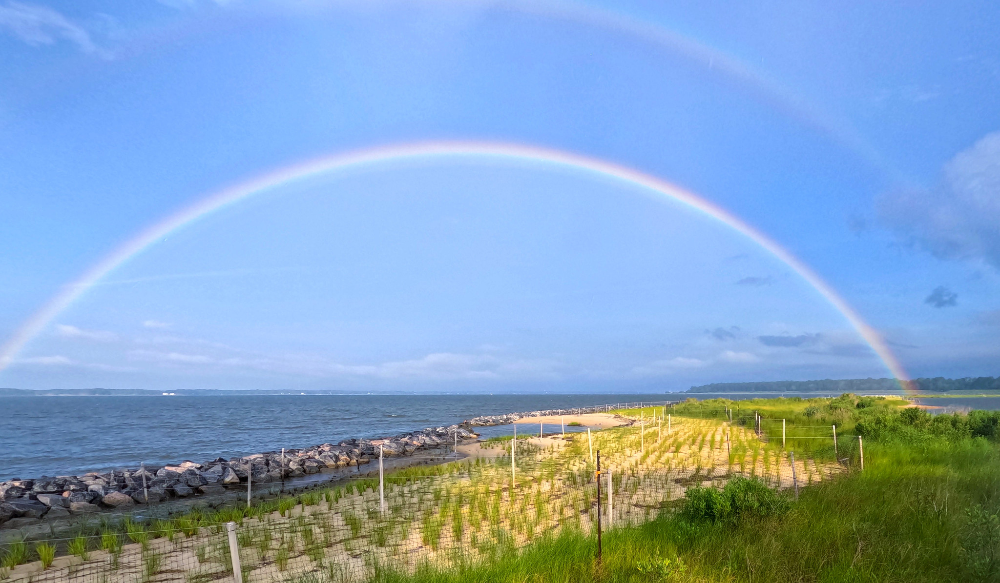
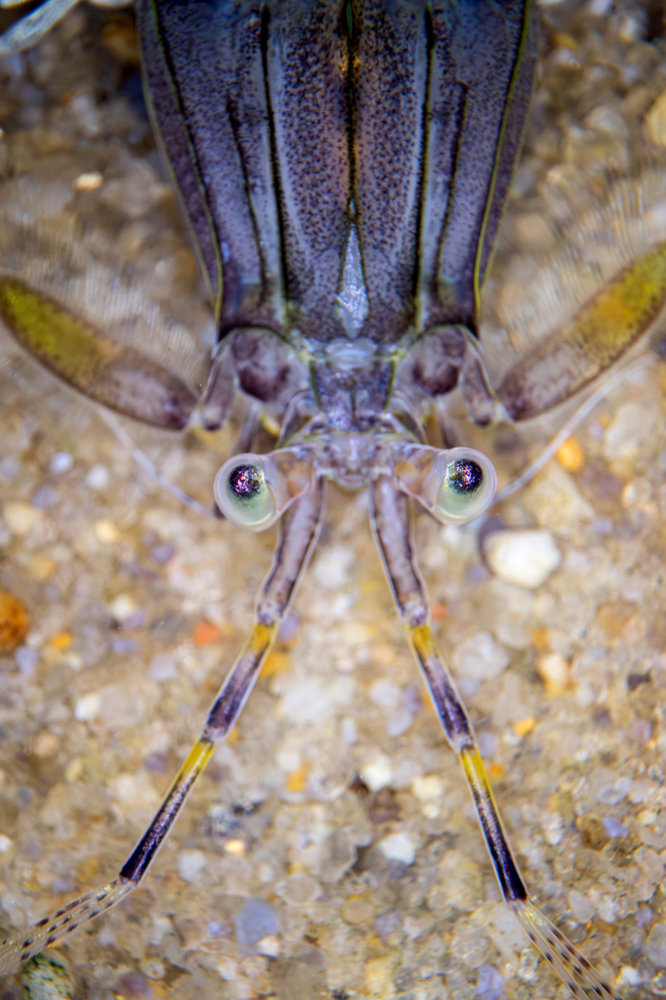

The Vims.edu Alt Text Quiz
Good alt text makes images work for everyone. Test your instincts on real examples from the VIMS.edu website.
How this works
You’ll see 10 real images from the VIMS.edu website, each shown in the context where it appears. For each one, pick the alt text you think works best. After you answer, we’ll explain why — including a few that are trickier than they look. You can go back at any time to revisit your answers.

New to alt text? Read this first (optional)
Alt text (alternative text) is a short written description of an image, added in the page’s code. Screen readers read it aloud to people who can’t see the image, and it appears if the image fails to load.
There’s really just one question to ask about any image: what is the key takeaway that a sighted person would get from this image?
- There is no key takeaway. The image is pure decoration, or an icon/graphic whose meaning is already in a nearby heading or label.
- Be concise. Convey the meaning, not every pixel. Skip “image of” / “photo of” (screen readers already say it’s an image).
- A caption doesn’t count as alt text. It isn’t tied to the image the way alt text is.
- Charts & maps need more. A short summary of the takeaway, and ideally the underlying data offered another way (a table or download).
That single rule is what every question in this quiz comes back to.